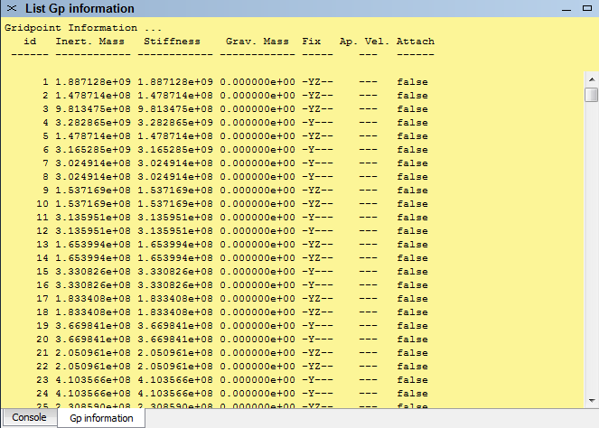

列表窗格


图 1：列表窗格。单击可在单独窗口中放大。
列表窗格的独特之处在于，它们只能通过命令处理来创建。无法从程序的工具栏或菜单中随意创建它们。
创建后，列表 窗格将与数据文件和绘图一起显示在 菜单上。生成该列表的 list 类型命令中所提供的词（不包括命令词 list）将用作其在 菜单上、标题栏中以及选项卡上的标签。例如，列出网格单元信息（zone list information） 将被标记为“zone information”。
如果多次输入相同的 list 类型命令，则每个生成的 列表 窗格都将具有相同的标签。
长列式数据的分帧输出
通常，窗格中的输出被分为两个不可见的分帧：上帧和下帧。上帧包含列标题，并在 列表 窗格中保持固定。下帧包含列式数据，可垂直滚动。下窗格右侧出现滚动条是一个视觉提示，表明输出已“分帧”（参见上图，并注意滚动条不会一直延伸到窗格顶部出现标题的位置）。由于顶部帧固定不动，当下帧中的列式数据滚动时，列标题始终可见。不过，这也会导致必须分别（两次）复制才能获取两个帧中的数据。
操作
选择文本
在 列表 窗格中按住鼠标左键并拖动，可选择从初始单击点到松开鼠标按钮处的一段文本块。
上下文（右键）命令
在 列表 窗格中右键单击，可看到包含多个选项的菜单：“复制”、“全选”、“更改字体”、“更改颜色”和“更改背景”（仅当 列表 窗格中当前选中了文本时，“复制”命令才可用）。
保存输出
列表 窗格的内容可以使用菜单序列 保存，将输出保存到文本文件。此命令也可在 工具栏（toolbar） 上使用。
| 这些内容对您有帮助吗？… | FLAC3D © 2019, Itasca | 原文更新于 2020 年 10 月 8 日 |